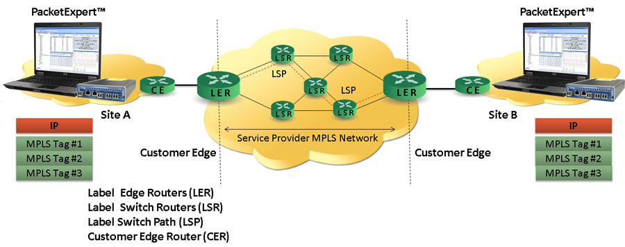
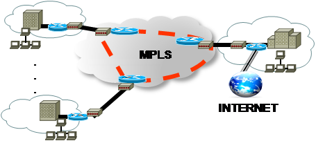

Homepage
Menu
Change
ADVANCED NETWORKS
INTERNET NETWORK LAYER
OSPF: an interior gateway routing protocol
What is?
Multiprotocol Label Switching (MPLS) is a routing technique in telecommunications networks that directs data from one node to the next based on short path labels rather than long network addresses, thus avoiding complex lookups in a routing table and speeding traffic flows.[1] The labels identify virtual links (paths) between distant nodes rather than endpoints. MPLS can encapsulate packets of various network protocols, hence the "multiprotocol" reference on its name. MPLS supports a range of access technologies, including T1/E1, ATM, Frame Relay, and DSL.

Role and functioning
MPLS is scalable and protocol-independent. In an MPLS network, data packets are assigned labels. Packet-forwarding decisions are made solely on the contents of this label, without the need to examine the packet itself. This allows one to create end-to-end circuits across any type of transport medium, using any protocol. The primary benefit is to eliminate dependence on a particular OSI model data link layer (layer 2) technology, such as Asynchronous Transfer Mode (ATM), Frame Relay, Synchronous Optical Networking (SONET) or Ethernet, and eliminate the need for multiple layer-2 networks to satisfy different types of traffic. Multiprotocol label switching belongs to the family of packet-switched networks. MPLS operates at a layer that is generally considered to lie between traditional definitions of OSI Layer 2 (data link layer) and Layer 3 (network layer), and thus is often referred to as a layer 2.5 protocol. It was designed to provide a unified data-carrying service for both circuit-based clients and packet-switching clients which provide a datagram service model. It can be used to carry many different kinds of traffic, including IP packets, as well as native ATM, SONET, and Ethernet frames. A number of different technologies were previously deployed with essentially identical goals, such as Frame Relay and ATM. Frame Relay and ATM use "labels" to move frames or cells throughout a network. The header of the Frame Relay frame and the ATM cell refers to the virtual circuit that the frame or cell resides on. The similarity between Frame Relay, ATM, and MPLS is that at each hop throughout the network, the “label” value in the header is changed. This is different from the forwarding of IP packets.[2] MPLS technologies have evolved with the strengths and weaknesses of ATM in mind. MPLS is designed to have lower overhead than ATM while providing connection-oriented services for variable-length frames, and has replaced much use of ATM in the market.[3]
